HTML5 Canvas Javascript Libraries
Which libraries should we use in javascript for game development ?
While I was searching about javascript libraries, I found some javascript libraries are being used for game development. This libraries ,
- provide tools to create animations for game development.
- helped to find graphical objects for games.
- provide useful functions you can use in your game projects …etc
15 Useful javascript libraries for game development below :
- Canvas Advanced Animation Toolkit
- Kinetic.js
- Fabric.js
- Crafty.js
- Create.js
- Easel.js
- oCanvas
- Paper.js
- Processing.js
- Three.js
- Jaws.js
- Impact.js
- Lime.js
- Melon.js
- Joint.js
Let’s continue taking information about html5 canvas javascript libraries.
1- Canvas Advanced Animation Toolkit
- CAAT is javascript animation toolkit.
- CAAT is a director-based scene graph manager
- CAAT provide useful and powerful animation environment
- CAAT is a platform and works with CSS, WebGL and Canvas.
- In addition, CAAT is not only create awesome scene and actors but also has facilities to managing audio.
- Open source code in here
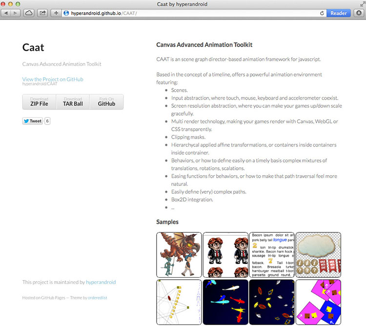
2- Kinetic.js
- Kinetic.js is HTML5 Canvas javascript framework that enable powerful animations, rotations, transition, node nestings, layering, filtering, caching ..etc
- Open source code in here
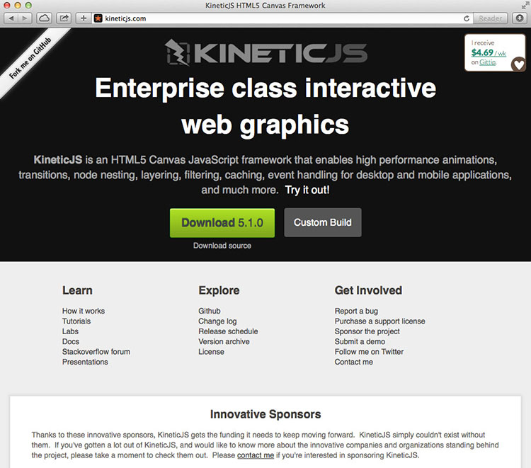
3- Fabric.js
- Fabric.js provides missing object model on canvas, as well as SVG parser.
- Also, it provides animation, geometrical shape, graphics.
- Open source code in here
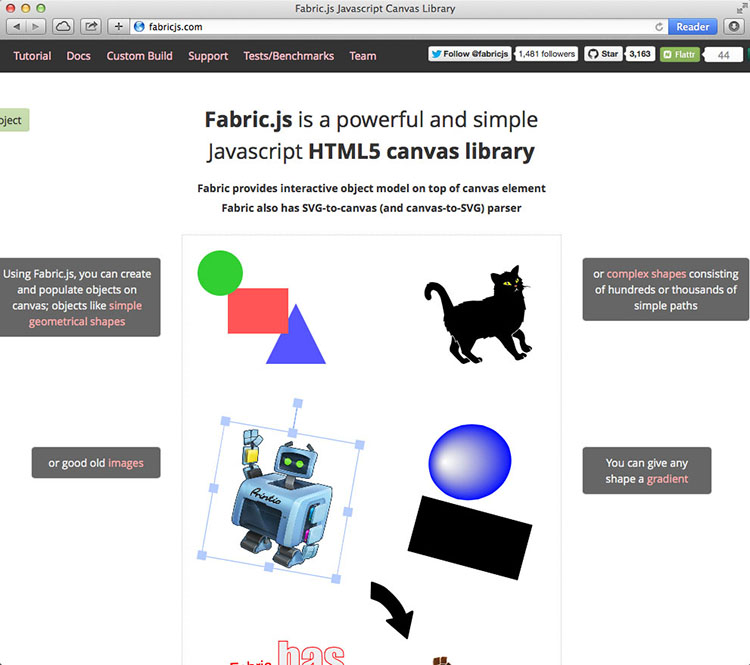
4- Crafty.js
- Crafty provides building of prototypical or full-featured 2D html5 games.
- Crafty uses syntax similar to jquery by having a selector engine for select entities by their components.
- Open source code in here
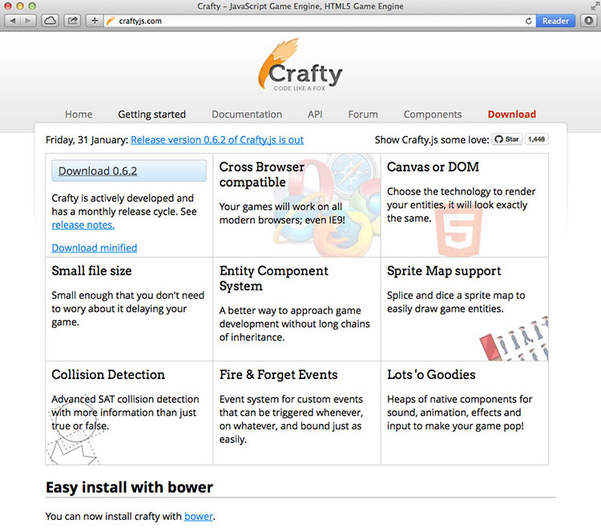
5- Create.js
- Create.js is comprehensive web editing interface for content management systems.
- It provide modern full browser-based html5 environment for managing content.
- OPen source code in here
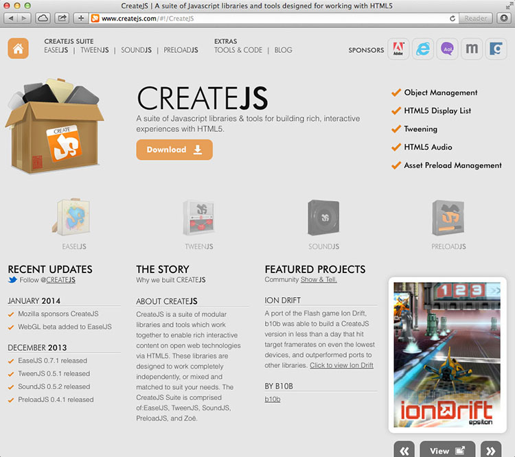
6- Easel.js
- Easel.js provide easy work with canvas elements.
- Also it provides shape based mouse interaction on elements.
- This javascript library is useful for games thanks to awesome graphics and generative arts.
- Open source code in here
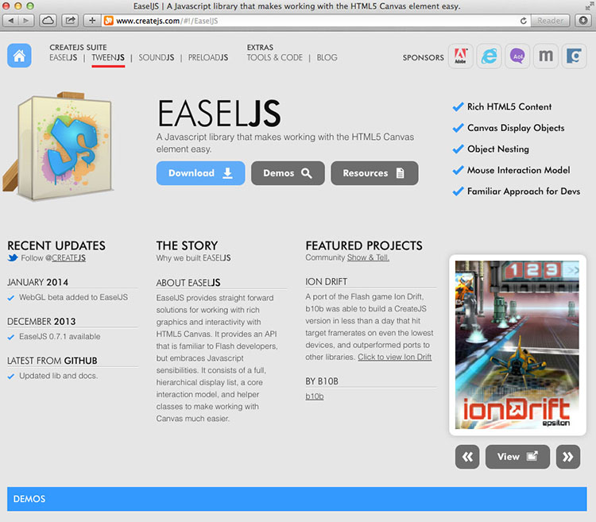
7- oCanvas
- OCanvas provide to work with object instead of pixels for html5 canvas elements.
- It provides a faster and easier way of work than writing pure javascript on the canvas.
- Open source code in here
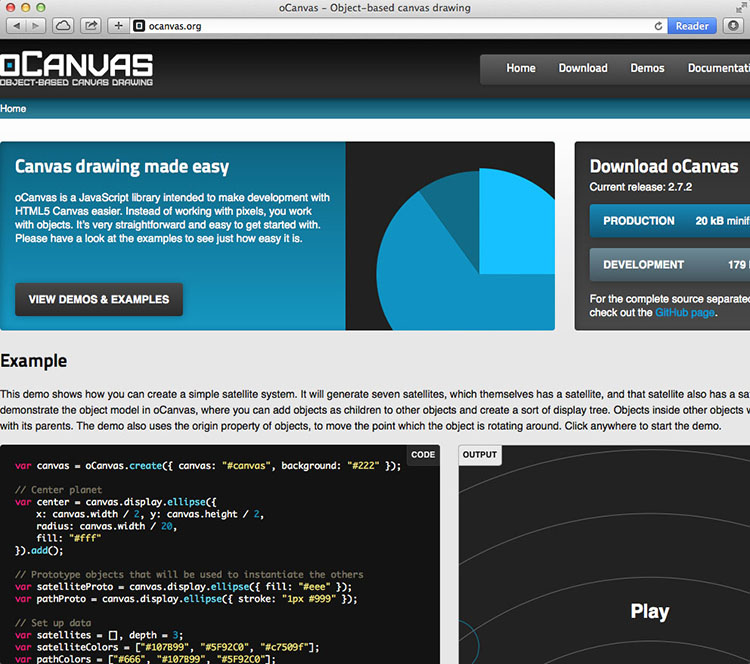
8- Paper.js
- Paper.js is vector graphics scripting framework that runs on top of html5 canvas.
- It offers to clean DOM and a lot of awesome functionality vector graphics, animations and images.
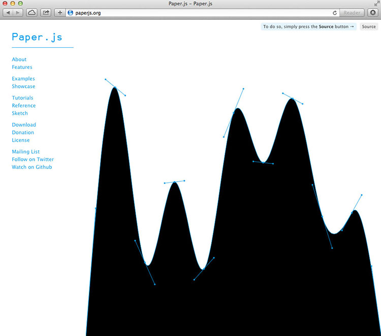
- Processing.js provide to makes your data visualizations, digital arts, interactive animations, educational graphs, games ..etc
- Open source code in here
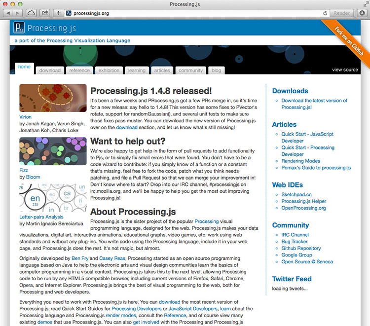
10- Three.js
- Three.js is library that makes WebGL, 3D in the browser.
- it provides powerful 3D animations.
- Open source code in here
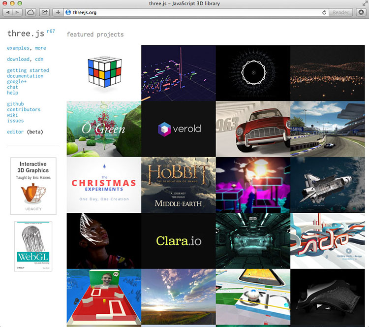
11- Jaws.js
- Jaws.js is core functions.
- Jaws is 2D game development framework.
- It provide the easiest way to make assets(images, musics, json data) in web-games.
- Open source code in here
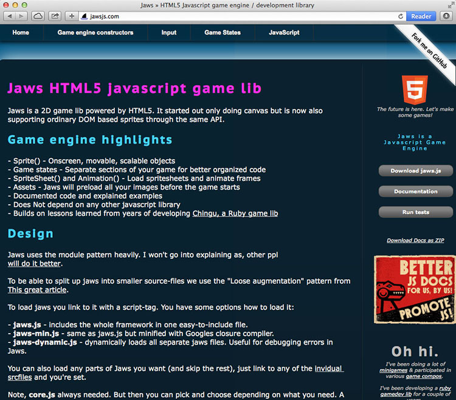
12- Impact.js
- Impact.js is a javascript game engine, it offer 2D animations, graphics, images for web and desktop games.
- It supports on all html5 capable browsers and include
iPhone,iPod TouchandiPhone.
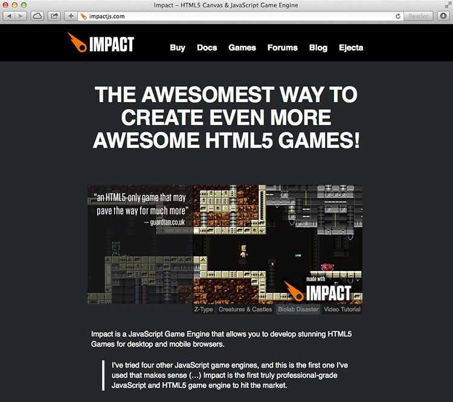
13- Lime.js
- Lime.js offers support for all mobile platforms.
- It provide support videos and better audio.
- Open source code in here
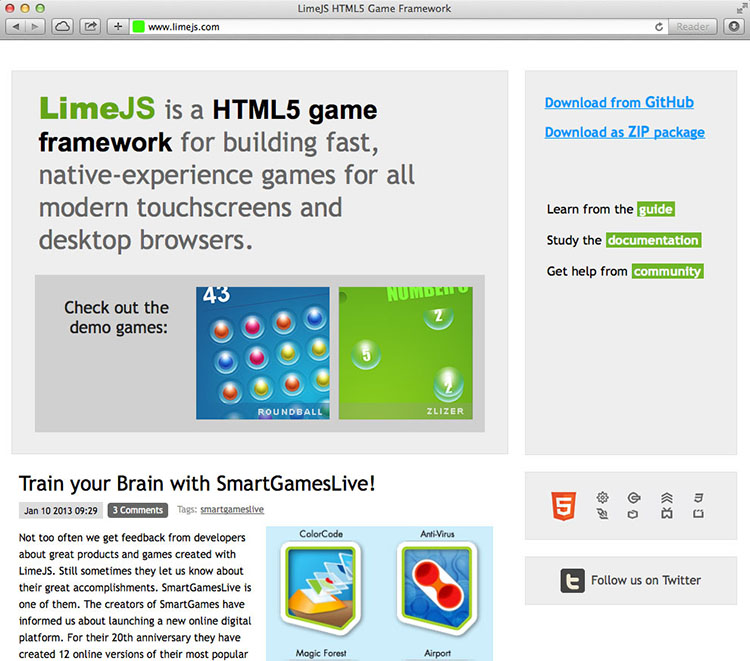
14- Melon.js
- Melon.js is a fresh-lightweight 2D sprite-based engine.
- It supports multiple audio channel support.
- It integrates tiled map format.
- Open source code in here
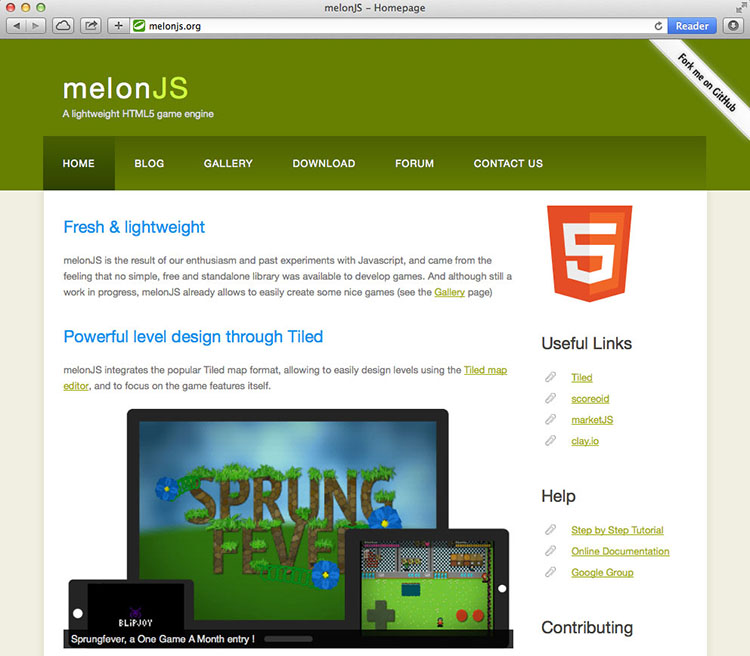
15- Joint.js
- Joint.js is a modern HTML 5 JavaScript library for visualize and interact with diagrams and graphs.
- Joint js is known diagramming library in javascript libraries.
- Open source code in here
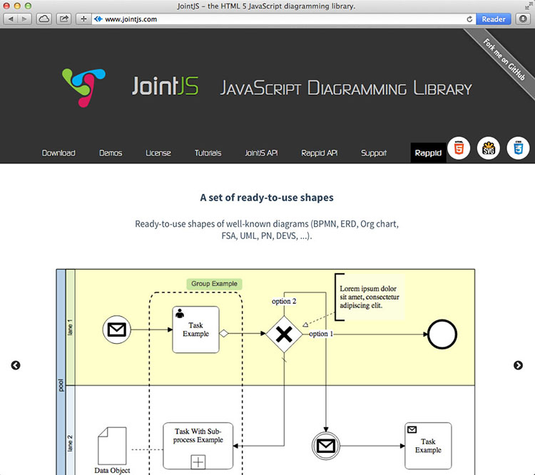
That’ s all.
comments powered by Disqus